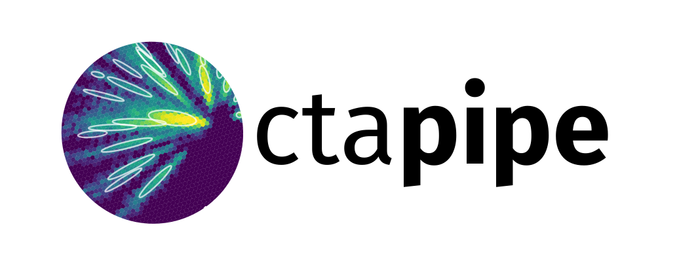

Prototype CTA Pipeline Framework (ctapipe)¶
version: 0.6.2.post178+git78208d1
{kind=link}
What is ctapipe?¶
ctapipe is a framework for prototyping the low-level data processing algorithms for the Cherenkov Telescope Array.
Caution
This is not yet stable code, so expect large and rapid changes to structure and functionality as we explore various design choices before the 1.0 release.
Code, feature requests, bug reports, pull requests: https://github.com/cta-observatory/ctapipe
License: BSD-3
Python 3.6 or later (Python 2 is not supported)
General documentation¶
Module API Status (relative to next release)¶
ctapipe is under activate developement and we will make breaking changes from release to release until we reach version 1.0.
Development Help¶
Development workflow examples from AstroPy: http://astropy.readthedocs.org/en/latest/development/workflow/development_workflow.html
GIT tutorial: https://www.atlassian.com/git/tutorials/syncing/git-pull
Code distribution and Packaging https://packaging.python.org/en/latest/